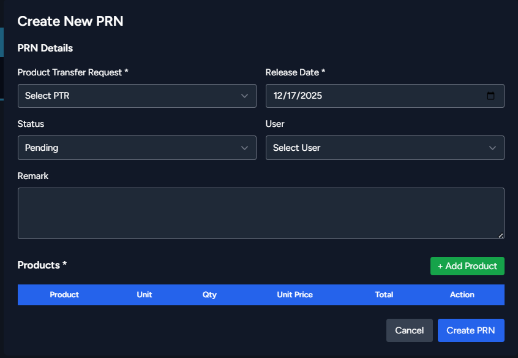

Product Release Notes
Record product releases from storage/production into active inventory.
Create Product Release Note
- Go to Purchasing & Stock → Product Release Notes
- Click "Create Release Note"
- Fill in the PRN Details section:
- Product Transfer Request: Select the related transfer request from the dropdown (required)
- Release Date: Select the date when products are being released (required)
- Status: Current status of the release (Pending, Completed, etc.)
- User: Select the user responsible for the release (required)
- Remark: Add optional notes or remarks about the release
- Add products in the Products section:
- Click the "+ Add Product" button to add items
- The table displays the following columns:
- Product: Name of the product being released
- Unit: Measurement unit of the product
- Qty: Quantity being released
- Unit Price (LKR): Price per unit
- Total (LKR): Total amount (automatically calculated)
- Action: Remove product from the list
- Add multiple products as needed
- Review all details for accuracy
- Click "Create PRN" to save and release the products, or "Cancel" to discard changes
⚠️ Important: When you select a Product Transfer Request from the dropdown, the products table is automatically populated with all products from that transfer request. You cannot add additional products outside of the transfer request.
📸 Screenshot: product-release-note.png
Place your product release note screenshot here
'">
Place your product release note screenshot here